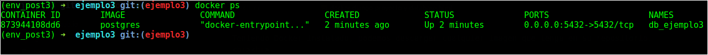

Introducción
Este es un ejemplo más sencillo que los dos anteriores, pero entendiendo el concepto de 'Dockerizar' nuestros proyectos en Django, llegaremos a tener un entorno de producción de manera local desde el inicio y se nos facilitará enormemente la fase del despliegue.
Gracias a Docker podemos aislar software con sus respectivos recursos en diferentes contenedores. De esta manera podemos crear una arquitectura de microservicios muy fácilmente.
Nota: Este ejemplo está desarrollado con Django 1.11.5 y Python 3.5.2. Y además supone que tienes Docker instalado.
Ingredientes
- psycopg2
Preparación
-
Paso 1: Instalación de librerías
pip install psycopg2 -
Paso 2: Crear contenedor de Postgres con Docker
Teniendo Docker instalado, podemos descargar cualquier imagen que tenga en su repositorio.
Puedes ver la gran cantidad de imágenes que toda la comunidad constantemente va agregando y mejorando.
Con 'docker run' estaremos creando un contenedor basándonos en una imagen que especifiquemos. En nuestro caso usaremos la imagen oficial de postgres.
Con la bandera '-p' le diremos al contenedor que exponga el puerto '5432' al exterior (si no hacemos esto, docker solo tendrá abierto el puerto '5432' dentro del contendor y no podremos hacer uso desde otro contenedor o la PC local)
Con la bandera '--name' solo cambiaremos el nombre por defecto.
Y con la bandera '-d' correremos la creación y levantamiento del contenedor en background (de otra manera se quedaría iniciado el contenedor en pantalla y luego tendrías que pararlo e iniciarlo otra vez).
Además también podemos enviar variables de entorno al contenedor con la bandera '-e'.
Aca puedes ver la lista de variables de entorno.
docker run -p 5432:5432 --name db_ejemplo3 -d postgres
 -
Paso 3: Configuración del contenedor en nuestro proyecto
Archivo: settings.py
Con Docker, ya no es necesario tener instalado en nuestro caso Postgres de manera local, ya que simplemente podemos crear un contenedor con la imagen de Postgres.
Por defecto la imagen de Postgres trae como 'user => postgres', 'database name => postgres' y sin password.
DATABASES = {
'default': {
'ENGINE': 'django.db.backends.postgresql_psycopg2',
'NAME': 'postgres',
'USER': 'postgres',
'PASSWORD': '',
'HOST': 'localhost',
'PORT': '5432',
}
}Ahora simplemente hacemos el migrate necesario e iniciamos el proyecto.
python manage.py migrate
python manage.py runserver
Resultado
Ahora tendremos nuestro proyecto conectado con la base de datos en un contenedor separado y no instalado localmente.
Si necesitan restaurar algun backup, tendrían que ingresar al contenedor de Postgres y hacerlo ahí mismo.
Con el comando 'exec', la bandera '-ti', el ID del contenedor creado y especificando 'bash', podemos entrar al contenedor y manipular la BD a nuestro antojo :).
docker exec -ti ID_CONTENEDOR bash
Resumen Final
Como comente al inicio del post, este sería un ejemplo más sencillo que los dos anteriores.
Sin embargo el concepto visto en este post, se puede no solo aplicar para base de datos, sino también para crear un contenedor para un servidor web, un broker como rabbitmq, una base de datos nosql, etc.
Las posibilidades son infinitas gracias a Docker! Y lo mejor es que podemos crear un entorno de producción, desde el inicio de nuestro proyecto.
En futuros posts, estaré creando un proyecto utilizando lo que hemos visto ahora, pero con la diferencia que usaremos 'docker-compose' para enlazar los contenedores y hacer que se comuniquen :D!
Aca les dejo el código de este ejemplo.
Espero les haya servido, saludos :)!